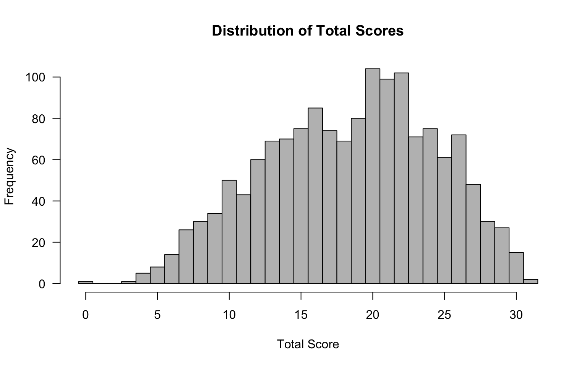
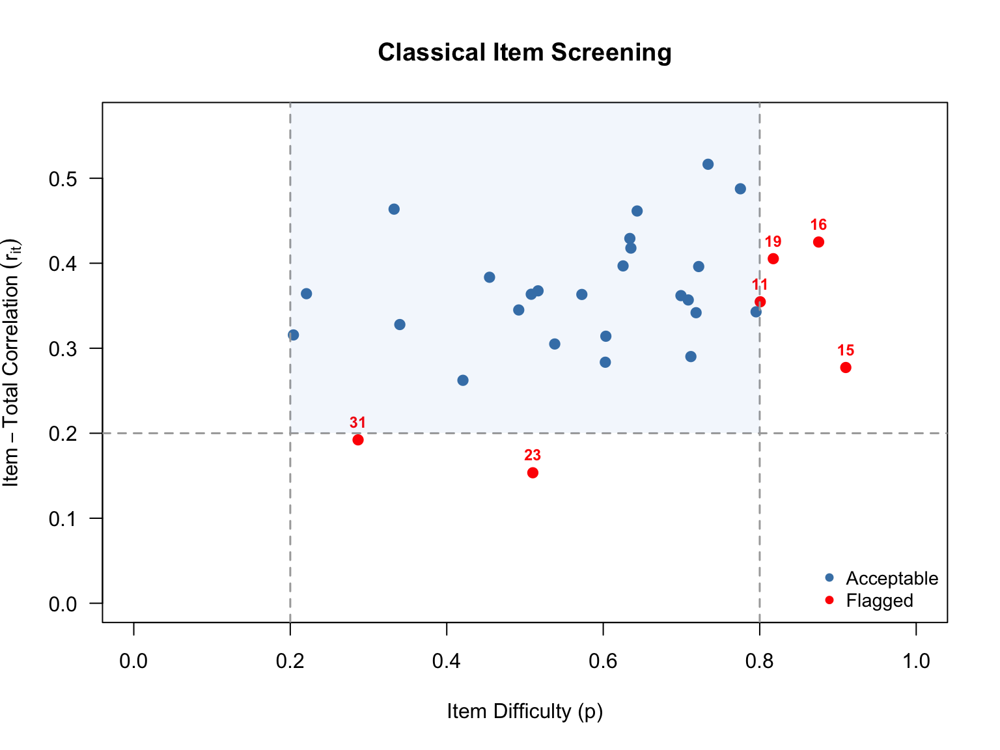
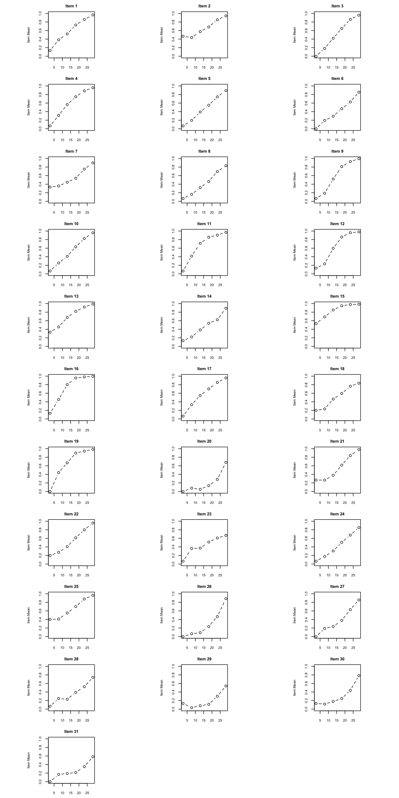
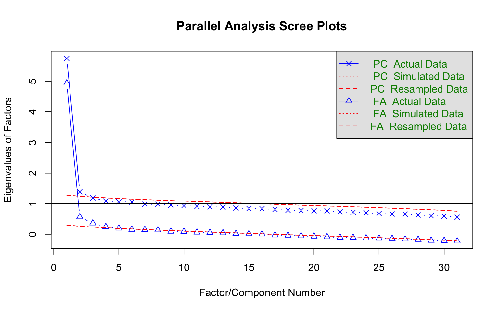
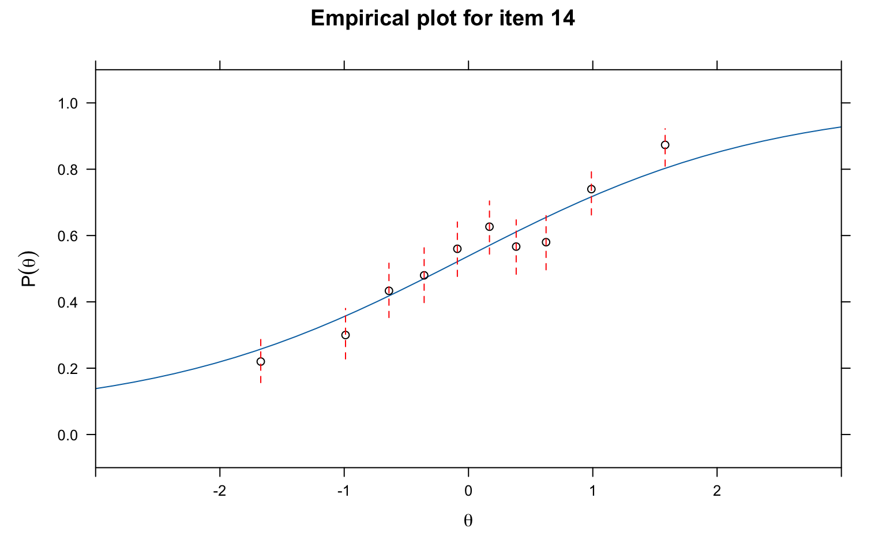
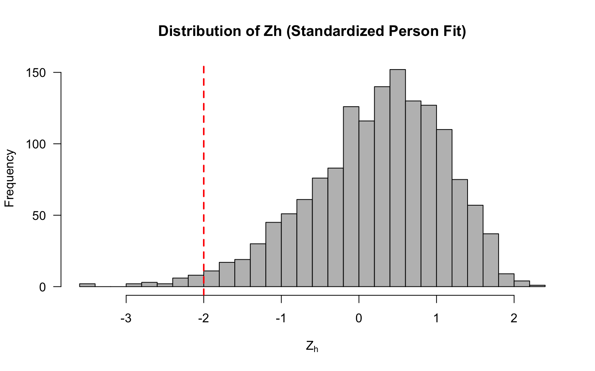
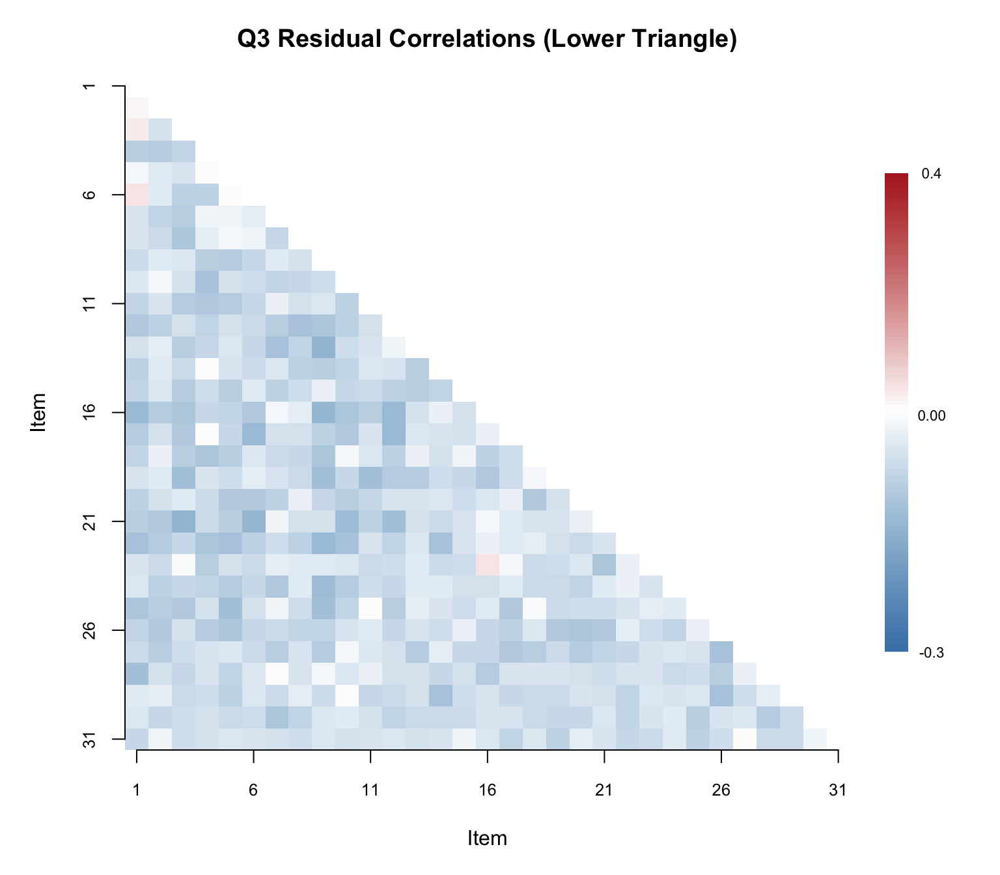
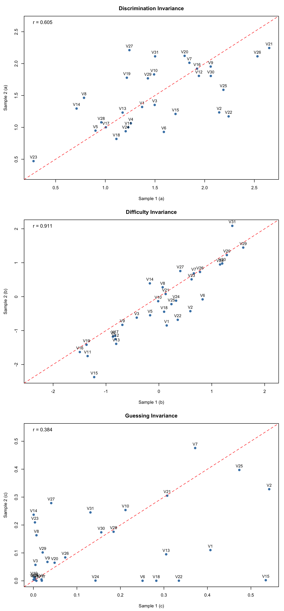

Code
library(CTT)
library(mirt)
library(psych)
library(knitr)
library(kableExtra)Fitting an IRT model to data is just the beginning. Before drawing any substantive conclusions from the model—whether about item quality, examinee proficiency, or test characteristics—we need to evaluate how well the model actually fits the data. A model that doesn’t fit is, at best, a rough approximation, and at worst, a source of misleading inferences.
Why does model fit matter? IRT models make strong assumptions:
When these assumptions are violated, parameter estimates can be biased, standard errors can be inaccurate, and the model-based inferences we care about can break down.
Levels of fit evaluation. We will examine fit at multiple levels:
Packages. We will use mirt (Chalmers, 2012) for IRT modeling and fit evaluation, CTT for classical item analysis, and psych for parallel analysis.
library(CTT)
library(mirt)
library(psych)
library(knitr)
library(kableExtra)Data. Our example data set is a subsample of \(N = 1{,}500\) examinees from the Colorado Department of Education (CDE) math assessment, consisting of 31 dichotomously scored items.
d <- read.csv(file = "~/Dropbox/Courses/EDUC 8720/Data Sets/MASC-CDE/cde_subsample_math.csv")
dim(d)#> [1] 1500 31Before fitting IRT models, it is always a good idea to examine the data from a classical test theory (CTT) perspective. This helps us identify problematic items, understand the score distribution, and set expectations for what IRT modeling will reveal.
tot <- rowSums(d)
hist(tot, breaks = seq(-0.5, 31.5, 1), las = 1, col = "grey",
main = "Distribution of Total Scores",
xlab = "Total Score", ylab = "Frequency")
# Check for perfect and zero scores
cat("Number of perfect scores (31):", sum(tot == 31), "\n")#> Number of perfect scores (31): 2cat("Number of zero scores (0):", sum(tot == 0), "\n")#> Number of zero scores (0): 1Why check for extreme scores? Examinees with perfect or zero scores provide no information for estimating item parameters and can cause estimation problems, particularly for the 3PL model. Watch for these.
item_out <- itemAnalysis(d)Key things to look for in the classical item statistics:
A useful way to get an overview of item quality is to plot difficulty against discrimination and apply common screening thresholds. Here we flag items with \(p < .20\) or \(p > .80\) (too hard or too easy) and items with \(r_{it} < .20\) (low discrimination).
# Extract difficulty (item mean) and item-total correlation (point-biserial)
p_vals <- item_out$itemReport$itemMean
r_it <- item_out$itemReport$pBis
item_nums <- 1:ncol(d)
# Identify flagged items
flag_diff <- p_vals < .20 | p_vals > .80
flag_disc <- r_it < .20
flag_any <- flag_diff | flag_disc
# Set up plot
plot(p_vals, r_it,
xlab = "Item Difficulty (p)",
ylab = expression(Item-Total~Correlation~(r[it])),
main = "Classical Item Screening",
xlim = c(0, 1), ylim = c(0, max(r_it) + 0.05),
pch = 16, col = ifelse(flag_any, "red", "steelblue"),
cex = 1.2, las = 1)
# Reference lines
abline(v = .20, col = "darkgrey", lty = 2, lwd = 1.5)
abline(v = .80, col = "darkgrey", lty = 2, lwd = 1.5)
abline(h = .20, col = "darkgrey", lty = 2, lwd = 1.5)
# Label flagged items
if (any(flag_any)) {
text(p_vals[flag_any], r_it[flag_any],
labels = item_nums[flag_any],
pos = 3, cex = 0.75, col = "red", font = 2)
}
# Shade the "acceptable" region lightly
rect(.20, .20, .80, par("usr")[4], col = rgb(0, 0.4, 0.8, 0.05), border = NA)
legend("bottomright",
legend = c("Acceptable", "Flagged"),
pch = 16, col = c("steelblue", "red"),
bty = "n", cex = 0.9)
# Build a summary of flagged items
flag_df <- data.frame(
Item = item_nums[flag_any],
p = round(p_vals[flag_any], 3),
r_it = round(r_it[flag_any], 3),
Reason = ifelse(
flag_diff[flag_any] & flag_disc[flag_any], "Difficulty & Discrimination",
ifelse(flag_diff[flag_any], "Difficulty", "Discrimination")
)
)
if (nrow(flag_df) > 0) {
kable(flag_df, col.names = c("Item", "$p$", "$r_{it}$", "Reason Flagged"),
caption = "Items Flagged by Classical Screening Criteria",
align = "cccc", row.names = FALSE)
} else {
cat("No items were flagged by the classical screening criteria.\n")
}| Item | \(p\) | \(r_{it}\) | Reason Flagged |
|---|---|---|---|
| 11 | 0.801 | 0.355 | Difficulty |
| 15 | 0.910 | 0.277 | Difficulty |
| 16 | 0.875 | 0.425 | Difficulty |
| 19 | 0.817 | 0.405 | Difficulty |
| 23 | 0.510 | 0.154 | Discrimination |
| 31 | 0.287 | 0.192 | Discrimination |
The scatterplot above shows each item positioned by its difficulty (\(x\)-axis) and its item-total correlation (\(y\)-axis). The dashed lines mark our screening thresholds: items falling outside the vertical lines (\(p < .20\) or \(p > .80\)) are too hard or too easy for most of the examinee sample, and items falling below the horizontal line (\(r_{it} < .20\)) are not discriminating well between high- and low-performing examinees. Items flagged on one or both criteria are shown in red.
These classical flags give us items to watch closely as we move into IRT modeling. An item that is very difficult with low discrimination in CTT will likely show up again as problematic in the IRT analysis—for example, with an extreme \(b\) parameter, a low \(a\) parameter, or poor item fit. Items flagged here are also prime candidates for convergence trouble in the 3PL model.
Empirical ICCs plot the proportion correct at each total score level. They give us a visual, model-free look at how each item functions. As you examine these, ask yourself:
scores <- rowSums(d)
op <- par(mfrow = c(11, 3),
pty = "s",
mar = c(2.5, 2.5, 2, 0.8),
cex.main = 0.85,
cex.axis = 0.7,
cex.lab = 0.7)
for (k in seq_len(ncol(d))) {
cttICC(scores = scores, itemVector = d[[k]], plotTitle = paste0("Item ", k))
}
par(op)
What to look for: Pay particular attention to items where the empirical ICC departs notably from a smooth S-shaped curve. Also look for items where the curve is nearly flat (low discrimination) or where responses from low-ability examinees are well above zero (guessing).
Before fitting unidimensional IRT models, we should check whether a single factor is sufficient. Parallel analysis compares the eigenvalues from the actual data to those from randomly generated data of the same dimensions. If only the first eigenvalue clearly exceeds the random benchmark, the unidimensionality assumption is supported.
pa<-fa.parallel(d, fm="pa", fa="both", main = "Parallel Analysis Scree Plots",
n.iter=50, SMC=TRUE, ylabel="Eigenvalues of Factors", show.legend=TRUE)
#> Parallel analysis suggests that the number of factors = 4 and the number of components = 2Interpreting the plot: Focus on the solid blue line (actual eigenvalues) relative to the dashed red line (random data eigenvalues). A clear “elbow” after the first factor, with subsequent factors falling near or below the random line, supports unidimensionality.
A parallel analysis can be a good way to decide how many factors/dimensions can be considered statistically significant, but it doesn’t necessarily mean that additional dimensions are practically significant. Divgi (1980) takes the difference of the first and second eigenvalues over the difference of the second and third eigenvalues. A cut value of 3 is chosen for the index so that values greater than 3 are considered unidimensional. More generally, Lord (1980) argued that if the first eigenvalue is much larger than the second, it can often be reasonable to treat the test as “essentially unidimensional.” (More sophisticated approaches have been proposed and implemented by Bill Stout with his “DIMTEST” procedure. For details see Nandakumar (1993).)
We fit three unidimensional IRT models, each with progressively more parameters:
| Model | Parameters per item | Estimated |
|---|---|---|
| 1PL (Rasch) | Difficulty (\(b\)) | \(b\) only; \(a\) constrained equal across items |
| 2PL | Difficulty (\(b\)), Discrimination (\(a\)) | \(a\) and \(b\) freely estimated |
| 3PL | Difficulty (\(b\)), Discrimination (\(a\)), Guessing (\(c\)) | \(a\), \(b\), and \(c\) freely estimated |
We request SE = TRUE so that standard errors are computed for all parameter estimates.
mod1 <- mirt(d, 1, itemtype = "Rasch", SE = TRUE)
mod2 <- mirt(d, 1, itemtype = "2PL", SE = TRUE)The 1PL and 2PL converge without issue. Now the 3PL:
mod3 <- mirt(d, 1, itemtype = "3PL", SE = TRUE)#> Warning: EM cycles terminated after 500 iterations.Notice the warning: the EM algorithm reached its default limit of 500 iterations without converging. This is common with the 3PL because the guessing parameter (\(c\)) is often poorly identified, making the likelihood surface flat in certain regions of the parameter space.
The 3PL model, in particular, can be difficult to estimate because the guessing parameter (\(c\)) is often poorly identified. If the model does not converge—as is the case with this data example—here are two strategies you can apply.
Strategy 1: Increase the number of EM cycles.
mod3 <- mirt(d, 1, itemtype = "3PL", SE = TRUE, technical = list(NCYCLES = 2000))Strategy 2: Remove problematic items. If you identified items from the classical diagnostics that have very low \(p\)-values, extremely low discrimination, or other anomalies, try removing them.
# Example: if item 23 was flagged as problematic
d2 <- d[, -23]
mod3r <- mirt(d2, 1, itemtype = "3PL", SE = TRUE)Note that Strategy 2 changes the item set, so the reduced model is not directly comparable to the full models via likelihood ratio tests. We will focus on the full 31-item models going forward (based on using mod3 with increased EM cycles which leads to convergence).
Let’s examine the 3PL parameter estimates and their standard errors. Here is what the default coef() output looks like for the first five items:
coef(mod3, IRTpars = TRUE, printSE = TRUE)[1:5]#> $V1
#> a b g u
#> par 1.3010094 -0.4065298 0.2714853 1
#> SE 0.2256101 0.2861556 0.1056328 NA
#>
#> $V2
#> a b g u
#> par 1.5478092 0.1760955 0.47146339 1
#> SE 0.3015103 0.1954730 0.05509958 NA
#>
#> $V3
#> a b g u
#> par 1.4500298 -0.4982353 0.03821073 1
#> SE 0.1808243 0.1750681 0.08683516 NA
#>
#> $V4
#> a b g u
#> par 1.17041672 -1.0178820 0.005665404 1
#> SE 0.09983055 0.1300436 0.052548495 NA
#>
#> $V5
#> a b g u
#> par 0.93275396 -0.36490298 0.001074912 1
#> SE 0.07590473 0.07379082 0.009544876 NAThis is informative but unwieldy for 31 items. Let’s create a more compact summary table.
# Extract IRT-parameterized coefficients with SEs
pars_list <- coef(mod3, IRTpars = TRUE, printSE = TRUE)
# Build a data frame from the item-level coefficient matrices
# Each element is a matrix with rows: par, SE (and possibly CI bounds)
item_names <- names(pars_list)
# Remove the GroupPars element
item_names <- item_names[item_names != "GroupPars"]
param_df <- do.call(rbind, lapply(item_names, function(nm) {
mat <- pars_list[[nm]]
data.frame(
Item = nm,
a = mat["par", "a"],
SE_a = mat["SE", "a"],
b = mat["par", "b"],
SE_b = mat["SE", "b"],
c = mat["par", "g"],
SE_c = mat["SE", "g"],
row.names = NULL
)
}))
kable(param_df, digits = 3, align = "lcccccc",
col.names = c("Item", "$a$", "$SE(a)$", "$b$", "$SE(b)$", "$c$", "$SE(c)$"),
caption = "3PL Item Parameter Estimates and Standard Errors")| Item | \(a\) | \(SE(a)\) | \(b\) | \(SE(b)\) | \(c\) | \(SE(c)\) |
|---|---|---|---|---|---|---|
| V1 | 1.301 | 0.226 | -0.407 | 0.286 | 0.271 | 0.106 |
| V2 | 1.548 | 0.302 | 0.176 | 0.195 | 0.471 | 0.055 |
| V3 | 1.450 | 0.181 | -0.498 | 0.175 | 0.038 | 0.087 |
| V4 | 1.170 | 0.100 | -1.018 | 0.130 | 0.006 | 0.053 |
| V5 | 0.933 | 0.076 | -0.365 | 0.074 | 0.001 | 0.010 |
| V6 | 0.892 | 0.177 | 0.088 | 0.341 | 0.015 | 0.125 |
| V7 | 1.888 | 0.353 | 0.643 | 0.113 | 0.417 | 0.034 |
| V8 | 1.103 | 0.176 | 0.267 | 0.187 | 0.117 | 0.070 |
| V9 | 1.988 | 0.210 | -0.767 | 0.118 | 0.048 | 0.069 |
| V10 | 1.634 | 0.234 | -0.087 | 0.148 | 0.229 | 0.062 |
| V11 | 1.123 | 0.097 | -1.520 | 0.133 | 0.005 | 0.041 |
| V12 | 1.879 | 0.140 | -1.022 | 0.068 | 0.002 | 0.022 |
| V13 | 1.200 | 0.209 | -1.140 | 0.470 | 0.193 | 0.205 |
| V14 | 0.817 | 0.168 | -0.039 | 0.423 | 0.062 | 0.139 |
| V15 | 1.297 | 0.249 | -2.016 | 0.781 | 0.213 | 0.429 |
| V16 | 1.932 | 0.202 | -1.550 | 0.171 | 0.013 | 0.124 |
| V17 | 1.017 | 0.084 | -0.995 | 0.101 | 0.003 | 0.023 |
| V18 | 0.780 | 0.075 | -0.596 | 0.143 | 0.004 | 0.040 |
| V19 | 1.471 | 0.116 | -1.389 | 0.090 | 0.002 | 0.018 |
| V20 | 1.991 | 0.262 | 1.262 | 0.075 | 0.060 | 0.015 |
| V21 | 2.381 | 0.319 | 0.091 | 0.087 | 0.303 | 0.037 |
| V22 | 1.528 | 0.239 | -0.071 | 0.173 | 0.217 | 0.071 |
| V23 | 0.338 | 0.068 | -0.056 | 0.617 | 0.011 | 0.097 |
| V24 | 1.005 | 0.168 | 0.053 | 0.247 | 0.052 | 0.094 |
| V25 | 1.897 | 0.356 | 0.045 | 0.163 | 0.448 | 0.054 |
| V26 | 2.292 | 0.308 | 0.752 | 0.059 | 0.078 | 0.022 |
| V27 | 1.539 | 0.224 | 0.592 | 0.100 | 0.165 | 0.039 |
| V28 | 1.023 | 0.208 | 1.066 | 0.165 | 0.185 | 0.052 |
| V29 | 1.494 | 0.214 | 1.520 | 0.105 | 0.053 | 0.017 |
| V30 | 1.802 | 0.299 | 1.083 | 0.083 | 0.157 | 0.026 |
| V31 | 1.397 | 0.338 | 1.825 | 0.169 | 0.184 | 0.026 |
What to look for in the parameter table:
Applying these guidelines to our 31 items:
Discrimination. Most items have discrimination values in the range of about 0.8 to 2.4, with a median around 1.4—indicating generally good discriminating power. The clear outlier is Item 23 (\(a = 0.34\)), which is well below the 0.5 threshold. This is the same item we flagged in the classical analysis for low item-total correlation, and it confirms that Item 23 is contributing very little information to the measurement of the latent trait.
Difficulty. The \(b\) parameters span a range from roughly \(-2.0\) to \(+1.8\), which is well within \(\pm 3\) and suggests the items provide good coverage across the ability scale. The easier items (e.g., Items 11, 15, 16, and 19 with \(b < -1.3\)) target lower-ability examinees, while the harder items (e.g., Items 20, 29, and 31 with \(b > 1.2\)) target higher-ability examinees. None of the \(b\) estimates are extreme enough to raise concern about estimation instability.
Guessing. This is where the most interesting patterns emerge. About a third of the items have \(c\) estimates near zero (e.g., Items 4, 5, 11, 12, 17, 18, 19), suggesting no appreciable guessing—these items might be well-served by a 2PL model. On the other hand, three items stand out with notably high \(c\) values: Item 2 (\(c = .47\)), Item 7 (\(c = .42\)), and Item 25 (\(c = .45\)). These are above what we would expect from random guessing on a 4-option item (.25), which is unusual and may indicate either that the incorrect options are not functioning as intended, or that there is some other source of correct responses among low-ability examinees.
Standard errors. The SEs on \(c\) deserve particular attention. For several items the SE on \(c\) is quite large relative to the estimate itself—for example, Item 15 (\(c = .21\), \(SE = .43\)) and Item 13 (\(c = .19\), \(SE = .21\)). These SEs indicate that the guessing parameter is essentially unidentified for those items. This is a common issue with the 3PL model and one reason many practitioners prefer the 2PL unless guessing is clearly and consistently present.
When comparing nested models, we can use the likelihood ratio test (LRT) implemented through anova() in mirt. This tests whether the additional parameters in the more complex model lead to a statistically significant improvement in fit.
# Compare 1PL to 2PL
anova(mod1, mod2)#> AIC SABIC HQ BIC logLik X2 df p
#> mod1 51392.88 51461.25 51456.22 51562.90 -25664.44
#> mod2 50914.97 51047.44 51037.69 51244.39 -25395.49 537.907 30 0The 1PL is nested within the 2PL (the 1PL constrains all \(a\) parameters to be equal). A significant result suggests the 2PL (which allows discrimination to vary) fits the data better. Indeed, that that’s the case in this example (note that p <.01 in the far right column of mod2).
# Compare 2PL to 3PL
anova(mod2, mod3)#> AIC SABIC HQ BIC logLik X2 df p
#> mod2 50914.97 51047.44 51037.69 51244.39 -25395.49
#> mod3 50826.81 51025.51 51010.89 51320.94 -25320.41 150.162 31 0The 2PL is nested within the 3PL (the 2PL constrains all \(c = 0\)). A significant result (as found in this example) suggests guessing is present and the 3PL provides a better fit relative to the 2PL (this time note that p <.01 in the far right column of mod3)
Caution: The LRT tells us about relative fit between two models. It does not tell us whether either model fits the data well in an absolute sense. We need item-level fit statistics for that.
Also examine the AIC and BIC values reported in the output. These information criteria penalize model complexity differently:
Item fit statistics assess whether each individual item conforms to the fitted model. This is where we move from “which model is best overall?” to “which specific items don’t fit?”
Yen’s (1981) Q1 statistic is one of the oldest and most widely used item fit statistics. It works by:
Under the null hypothesis (item fits the model), Q1 approximately follows a \(\chi^2\) distribution with \(G - m\) degrees of freedom, where \(m\) is the number of item parameters.
Known limitation: Q1 has inflated Type I error rates, especially for shorter tests (Orlando & Thissen, 2000). This means it may flag items as misfitting even when they actually fit the model. We will return to this issue below.
f1 <- itemfit(mod1, fit_stats = c("X2"), group.bins = 10, method = "EAP")
f2 <- itemfit(mod2, fit_stats = c("X2"), group.bins = 10, method = "EAP")
f3 <- itemfit(mod3, fit_stats = c("X2"), group.bins = 10, method = "EAP")
# Compare p-values across models
# Helper: format p-value, bolding those < .05
bold_sig <- function(p) {
ifelse(p < .05,
paste0("**", formatC(p, digits = 3, format = "f"), "**"),
formatC(p, digits = 3, format = "f"))
}
Yen <- data.frame(
Item = f1$item,
p_1PL = bold_sig(f1$p.X2),
p_2PL = bold_sig(f2$p.X2),
p_3PL = bold_sig(f3$p.X2)
)
kable(Yen, col.names = c("Item", "$p$ (1PL)", "$p$ (2PL)", "$p$ (3PL)"),
caption = "Yen's Q1 p-values Across Models (significant values in bold)",
align = "lccc")| Item | \(p\) (1PL) | \(p\) (2PL) | \(p\) (3PL) |
|---|---|---|---|
| V1 | 0.287 | 0.248 | 0.334 |
| V2 | 0.391 | 0.089 | 0.187 |
| V3 | 0.000 | 0.037 | 0.104 |
| V4 | 0.002 | 0.047 | 0.095 |
| V5 | 0.655 | 0.010 | 0.001 |
| V6 | 0.530 | 0.309 | 0.432 |
| V7 | 0.007 | 0.000 | 0.062 |
| V8 | 0.230 | 0.022 | 0.013 |
| V9 | 0.000 | 0.008 | 0.009 |
| V10 | 0.001 | 0.035 | 0.198 |
| V11 | 0.000 | 0.087 | 0.067 |
| V12 | 0.000 | 0.010 | 0.002 |
| V13 | 0.065 | 0.541 | 0.308 |
| V14 | 0.070 | 0.016 | 0.022 |
| V15 | 0.023 | 0.042 | 0.153 |
| V16 | 0.000 | 0.023 | 0.062 |
| V17 | 0.422 | 0.027 | 0.049 |
| V18 | 0.268 | 0.014 | 0.066 |
| V19 | 0.000 | 0.328 | 0.164 |
| V20 | 0.000 | 0.000 | 0.010 |
| V21 | 0.000 | 0.001 | 0.157 |
| V22 | 0.060 | 0.025 | 0.500 |
| V23 | 0.000 | 0.557 | 0.309 |
| V24 | 0.044 | 0.173 | 0.070 |
| V25 | 0.087 | 0.008 | 0.177 |
| V26 | 0.000 | 0.000 | 0.003 |
| V27 | 0.004 | 0.011 | 0.240 |
| V28 | 0.000 | 0.000 | 0.002 |
| V29 | 0.053 | 0.023 | 0.203 |
| V30 | 0.001 | 0.004 | 0.272 |
| V31 | 0.000 | 0.019 | 0.227 |
Interpreting the table: Items with small \(p\)-values (e.g., \(< .05\)) show evidence of misfit under that model. Compare across columns: an item that misfits under the 1PL but fits under the 2PL likely has unusual discrimination. An item that misfits under the 2PL but fits under the 3PL may have a guessing component.
Chalmers and Ng (2017) proposed the PV-Q1 as an improvement to Q1. The key insight is that Q1 treats estimated \(\hat{\theta}\) values as known when forming groups, ignoring the uncertainty in \(\theta\) estimation. This is a major source of the inflated Type I error rates.
How PV-Q1 works:
The PV-Q1 statistic has Type I error rates much closer to the nominal level, especially for shorter tests where \(\theta\) estimation is less precise.
f3n <- itemfit(mod3, fit_stats = c("X2", "PV_Q1"), group.bins = 10, method = "EAP")
compare <- data.frame(
Item = f3n$item,
p_Q1 = bold_sig(f3n$p.X2),
p_PV_Q1 = bold_sig(f3n$p.PV_Q1)
)
kable(compare, col.names = c("Item", "$p$ (Q1)", "$p$ (PV-Q1)"),
caption = "Q1 vs. PV-Q1 p-values for the 3PL Model (significant values in bold)",
align = "lcc")| Item | \(p\) (Q1) | \(p\) (PV-Q1) |
|---|---|---|
| V1 | 0.334 | 0.345 |
| V2 | 0.187 | 0.305 |
| V3 | 0.104 | 0.548 |
| V4 | 0.095 | 0.433 |
| V5 | 0.001 | 0.386 |
| V6 | 0.432 | 0.399 |
| V7 | 0.062 | 0.312 |
| V8 | 0.013 | 0.154 |
| V9 | 0.009 | 0.218 |
| V10 | 0.198 | 0.426 |
| V11 | 0.067 | 0.397 |
| V12 | 0.002 | 0.039 |
| V13 | 0.308 | 0.295 |
| V14 | 0.022 | 0.370 |
| V15 | 0.153 | 0.110 |
| V16 | 0.062 | 0.264 |
| V17 | 0.049 | 0.371 |
| V18 | 0.066 | 0.341 |
| V19 | 0.164 | 0.233 |
| V20 | 0.010 | 0.290 |
| V21 | 0.157 | 0.283 |
| V22 | 0.500 | 0.433 |
| V23 | 0.309 | 0.143 |
| V24 | 0.070 | 0.201 |
| V25 | 0.177 | 0.379 |
| V26 | 0.003 | 0.250 |
| V27 | 0.240 | 0.369 |
| V28 | 0.002 | 0.079 |
| V29 | 0.203 | 0.257 |
| V30 | 0.272 | 0.325 |
| V31 | 0.227 | 0.511 |
What to expect: You will often see that PV-Q1 produces larger \(p\)-values (fewer rejections) than Q1. Items flagged by Q1 but not by PV-Q1 were likely false positives. Items flagged by both statistics provide stronger evidence of genuine misfit.
Numerical fit statistics are useful, but always supplement them with visual inspection. Empirical fit plots overlay the model-predicted ICC on the empirical (observed) proportions at each ability level. These plots make it easy to see where and how the model fails to fit.
# Empirical fit plot using Q1 grouping
itemfit(mod3, fit_stats = c("X2"), group.bins = 10, empirical.plot = 14, xlim = c(-3, 3))
# Empirical fit plot using PV-Q1 grouping
itemfit(mod3, fit_stats = c("PV_Q1"), group.bins = 10, empirical.plot = 14, xlim = c(-3, 3))
What to look for:
You can change the item number in empirical.plot to examine any item. It is good practice to inspect items flagged as misfitting, as well as a sample of well-fitting items, to calibrate your visual judgement.
To view all 31 empirical fit plots at once, we can save them as a multi-page PDF (one item per page). Note that itemfit() with empirical.plot creates a standalone plot on each call, so par(mfrow) does not work with it — a PDF with one plot per page is the way to go.
pdf("empirical_fit_plots_3PL.pdf", width = 7, height = 5)
for (k in seq_len(ncol(d))) {
# itemfit returns a lattice (trellis) object, which must be explicitly
# printed to render inside a loop or non-interactive device
print(itemfit(mod3, fit_stats = c("X2"), group.bins = 10,
empirical.plot = k, xlim = c(-3, 3)))
}
invisible(dev.off())Person fit statistics identify examinees whose response patterns are inconsistent with the model. The most common statistic is the standardized log-likelihood ratio, \(l_z\) (Drasgow et al., 1985).
How \(l_z\) works: For each examinee, it computes the log-likelihood of their observed response pattern given the model and their estimated \(\theta\), and then standardizes this value. Large negative values of \(l_z\) indicate aberrant response patterns—the examinee’s responses are less likely than the model predicts for someone at their ability level.
Common sources of person misfit include:
Let’s look at the \(l_z\) statistics for the first 20 examinees.
lz <- personfit(mod3)
head(lz, 20)#> outfit z.outfit infit z.infit Zh
#> 1 0.7462836 -0.9432010 0.8016347 -1.23808052 1.13835976
#> 2 0.8841978 -0.4300856 0.9281965 -0.44253447 0.47109818
#> 3 0.8238428 -0.6936679 0.9285431 -0.42107117 0.57626619
#> 4 0.8492439 -0.1374976 1.0197154 0.16199785 0.04635475
#> 5 1.3979418 1.6397305 1.2975157 1.94840614 -2.01255039
#> 6 3.3923110 2.0785375 0.9978132 0.08884632 -0.60167773
#> 7 0.7655236 -0.9716392 0.8544809 -0.95269532 0.97477333
#> 8 1.1460655 0.4710558 1.1589329 0.79604835 -0.70435368
#> 9 1.2677980 0.8963200 1.3500942 1.81589992 -1.67845829
#> 10 0.5540594 -1.1891524 0.6902171 -1.63912196 1.47765786
#> 11 0.6162276 -1.0158118 0.7368906 -1.37733714 1.27958831
#> 12 1.5595572 0.9898273 0.9960123 0.06486048 -0.31359342
#> 13 1.1731188 0.8238607 1.1020870 0.77120723 -0.79299085
#> 14 1.2924299 0.7994144 1.2698409 1.28809470 -1.27744204
#> 15 0.5380617 -0.6597944 0.8080736 -0.73987396 0.86622976
#> 16 0.9716941 0.2935635 0.9067865 -0.18941823 0.07501934
#> 17 1.2350659 0.8795428 1.2434877 1.40115958 -1.32314873
#> 18 1.0097173 0.2274315 0.9643942 -0.06167773 0.06706602
#> 19 0.2896286 -0.5134008 0.6690958 -0.81174926 0.91935734
#> 20 0.8704179 -0.4089528 0.9696080 -0.13034675 0.29007570hist(lz$Zh, breaks = 40, main = "Distribution of Zh (Standardized Person Fit)",
xlab = expression(Z[h]), col = "grey", las = 1)
abline(v = -2, col = "red", lty = 2, lwd = 2)
Now let’s flag any examinees with values < -2.
# Flag examinees with Zh < -2 (common cutoff)
flagged <- sum(lz$Zh < -2, na.rm = TRUE)
cat("Number of examinees flagged (Zh < -2):", flagged, "\n")#> Number of examinees flagged (Zh < -2): 23cat("Percentage flagged:", round(100 * flagged / nrow(d), 1), "%\n")#> Percentage flagged: 1.5 %Interpreting person fit: The \(Z_h\) statistic is approximately standard normal under the null hypothesis. Values below \(-2\) are commonly used as a flag. However, be cautious about over-interpreting person fit for individual examinees—it is more useful for identifying systematic patterns (e.g., a large proportion of misfitting examinees may indicate a model problem rather than examinee problems).
Local independence means that after conditioning on \(\theta\), the residual correlations between item pairs should be approximately zero. Yen’s (1993) Q3 statistic assesses this by computing correlations between item residuals.
Procedure:
Note: Because residuals must sum to a constant given a fixed \(\theta\), the expected average Q3 correlation is slightly negative (approximately \(-1/(J-1)\) for \(J\) items). So a value of \(0.00\) is already slightly above average. Various thresholds have been proposed for flagging LD; a common rule of thumb is to flag pairs where \(|Q3| > .20\) above the average Q3 value.
# Compute the Q3 matrix (suppress the printed matrix)
Q3_mat <- residuals(mod3, type = "Q3", method = "EAP")# Summary statistics for the lower triangle
lower_tri <- Q3_mat[lower.tri(Q3_mat)]
cat("Mean Q3 (lower triangle):", round(mean(lower_tri), 4), "\n")#> Mean Q3 (lower triangle): -0.0264cat("SD of Q3 values:", round(sd(lower_tri), 4), "\n")#> SD of Q3 values: 0.0349cat("Range:", round(min(lower_tri), 4), "to", round(max(lower_tri), 4), "\n")#> Range: -0.1187 to 0.0832Rather than printing the full 31 \(\times\) 31 matrix, a heatmap of the lower triangle makes it easy to spot clusters of local dependence at a glance.
# Mask upper triangle and diagonal for plotting
Q3_plot <- Q3_mat
Q3_plot[upper.tri(Q3_plot, diag = TRUE)] <- NA
# Set up color palette: blue (negative) -> white (zero) -> red (positive)
n_colors <- 100
breaks <- seq(-0.3, 0.4, length.out = n_colors + 1)
colors <- colorRampPalette(c("steelblue", "white", "firebrick"))(n_colors)
par(mar = c(5, 5, 3, 6))
image(1:31, 1:31, t(Q3_plot[31:1, ]),
col = colors, breaks = breaks,
xlab = "Item", ylab = "Item",
main = "Q3 Residual Correlations (Lower Triangle)",
axes = FALSE, las = 1)
axis(1, at = seq(1, 31, by = 5), cex.axis = 0.8)
axis(2, at = seq(1, 31, by = 5), labels = rev(seq(1, 31, by = 5)), cex.axis = 0.8)
# Add a color legend
legend_y <- seq(5, 27, length.out = n_colors)
for (i in seq_len(n_colors)) {
rect(33, legend_y[i], 34, legend_y[i + 1],
col = colors[i], border = NA, xpd = TRUE)
}
text(35, legend_y[1], round(breaks[1], 2), cex = 0.7, xpd = TRUE)
text(35, legend_y[n_colors], round(breaks[n_colors + 1], 2), cex = 0.7, xpd = TRUE)
text(35, legend_y[round(n_colors / 2)], "0.00", cex = 0.7, xpd = TRUE)
Now let’s identify the specific item pairs that exceed the \(.20\) threshold.
# Build a table of flagged item pairs (Q3 > .20)
flagged_pairs <- which(Q3_mat > .20 & lower.tri(Q3_mat), arr.ind = TRUE)
if (nrow(flagged_pairs) > 0) {
flag_df <- data.frame(
Item_1 = colnames(Q3_mat)[flagged_pairs[, 2]],
Item_2 = rownames(Q3_mat)[flagged_pairs[, 1]],
Q3 = round(Q3_mat[flagged_pairs], 3)
)
flag_df <- flag_df[order(-flag_df$Q3), ]
cat("Number of item pairs with Q3 > .20:", nrow(flag_df),
"out of", choose(ncol(d), 2), "total pairs\n\n")
kable(flag_df, col.names = c("Item 1", "Item 2", "Q3"),
caption = "Item Pairs Flagged for Local Dependence (Q3 > .20)",
align = "llc", row.names = FALSE)
} else {
cat("No item pairs exceeded the Q3 > .20 threshold.\n")
}#> No item pairs exceeded the Q3 > .20 threshold.Interpreting Q3: A small number of flagged pairs is not necessarily alarming—some false positives are expected. However, if many pairs are flagged, or if the flagged pairs cluster among a subset of items, this suggests local dependence that could bias parameter estimates. Common causes of LD include:
A hallmark property of IRT is that item parameters should be invariant across samples from the same population (up to sampling variability and a linear transformation). We can check this empirically by splitting the sample, estimating models separately, and comparing the resulting parameter estimates.
# Split sample in half (assuming random ordering)
samp1 <- d[1:750, ]
samp2 <- d[751:1500, ]
# Fit 3PL to each subsample
est1 <- mirt(samp1, 1, itemtype = "3PL")est2 <- mirt(samp2, 1, itemtype = "3PL")# Extract parameters
coef1 <- coef(est1, IRTpars = TRUE, simplify = TRUE)$items
coef2 <- coef(est2, IRTpars = TRUE, simplify = TRUE)$itemsr_a <- round(cor(coef1[, "a"], coef2[, "a"]), 3)
r_b <- round(cor(coef1[, "b"], coef2[, "b"]), 3)
r_g <- round(cor(coef1[, "g"], coef2[, "g"]), 3)
cat("Correlation of a estimates:", r_a, "\n")#> Correlation of a estimates: 0.605cat("Correlation of b estimates:", r_b, "\n")#> Correlation of b estimates: 0.911cat("Correlation of g estimates:", r_g, "\n")#> Correlation of g estimates: 0.384par(mfrow = c(3, 1), mar = c(4.5, 4.5, 3, 1))
# Compute shared axis limits for each parameter
lim_a <- range(c(coef1[, "a"], coef2[, "a"]))
lim_b <- range(c(coef1[, "b"], coef2[, "b"]))
lim_g <- range(c(coef1[, "g"], coef2[, "g"]))
# Discrimination (a)
plot(coef1[, "a"], coef2[, "a"],
xlab = "Sample 1 (a)", ylab = "Sample 2 (a)",
xlim = lim_a, ylim = lim_a,
main = "Discrimination Invariance", pch = 16, col = "steelblue", cex = 1.2)
abline(0, 1, col = "red", lty = 2)
text(coef1[, "a"], coef2[, "a"], labels = rownames(coef1), pos = 3, cex = 0.9)
legend("topleft", legend = paste0("r = ", r_a), bty = "n", cex = 1.1)
# Difficulty (b)
plot(coef1[, "b"], coef2[, "b"],
xlab = "Sample 1 (b)", ylab = "Sample 2 (b)",
xlim = lim_b, ylim = lim_b,
main = "Difficulty Invariance", pch = 16, col = "steelblue", cex = 1.2)
abline(0, 1, col = "red", lty = 2)
text(coef1[, "b"], coef2[, "b"], labels = rownames(coef1), pos = 3, cex = 0.9)
legend("topleft", legend = paste0("r = ", r_b), bty = "n", cex = 1.1)
# Guessing (c)
plot(coef1[, "g"], coef2[, "g"],
xlab = "Sample 1 (c)", ylab = "Sample 2 (c)",
xlim = lim_g, ylim = lim_g,
main = "Guessing Invariance", pch = 16, col = "steelblue", cex = 1.2)
abline(0, 1, col = "red", lty = 2)
text(coef1[, "g"], coef2[, "g"], labels = rownames(coef1), pos = 3, cex = 0.9)
legend("topleft", legend = paste0("r = ", r_g), bty = "n", cex = 1.1)
par(mfrow = c(1, 1))Interpreting invariance plots: Points should cluster near the identity line (red dashed). Look for:
Start with the data. Compute classical item statistics and plot empirical ICCs. Flag items with unusual \(p\)-values, low discrimination, or irregular ICC shapes.
Check dimensionality. Run parallel analysis. If unidimensionality is supported (additional factors are not statistically or practically significant), proceed with unidimensional models. If not, consider multidimensional models or bifactor models.
Fit competing models. Estimate 1PL, 2PL, and 3PL. Use likelihood ratio tests and information criteria (AIC, BIC) to compare overall fit.
Evaluate item fit. Use multiple statistics:
mirt as "S_X2").Check person fit. Identify aberrant response patterns. Consider whether misfit is concentrated in a particular group of examinees.
Verify assumptions. Use Q3 to check local independence. Check parameter invariance by fit the model to unique groups of test-takers.
With large samples (\(N > 1{,}000\)), many fit statistics will reject the null hypothesis of perfect fit—because no model fits perfectly. What matters is whether the departures from the model are large enough to affect the inferences you care about. Use effect size measures, empirical plots, and domain knowledge to distinguish between statistically significant and practically meaningful misfit.